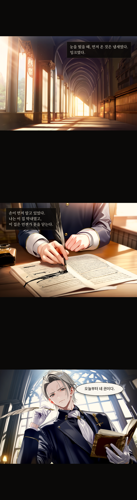
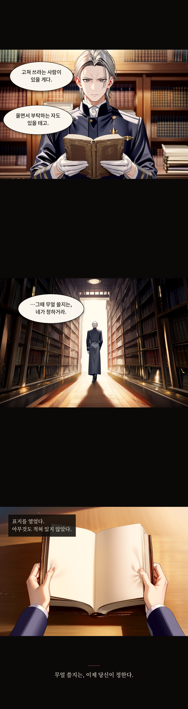

먹칠 해제 0 / 0
I
오늘부터 네 권이다
붓을 넘겨받은 아침. 아홉 컷.



II
명부
열세 사람. 전부 숨기는 것이 있다. 하나만 빼고.
III
선례
역대 뤼트겐이 남긴 기록들. 황실은 전부 기억하고 있다.
壹
삼대 전 가주가 선황의 가발 분실 사건을 세 페이지에 걸쳐 상술했다.
그 가발은 아직도 황실 문서고에 보관 중이다.
貳
어느 서기가 황후의 재채기 횟수를 세어 적었다.
이유는 '정확성'이었다.
參
'폐하께서 우셨다' 한 줄 때문에 외교 사절이 돌아간 해가 있다.
그 줄은 삭제되지 않았다.
肆
콘라트가 즉위식 날 황제의 구두끈이 풀린 것을 적었다.
그날 이후 궁정 예법에 구두 점검 조항이 추가되었다.
전해지지 않는 쪽
뤼트겐 가는 단 한 번도 기록을 고친 적이 없다고 전해진다. 실제로는 엘리자가 세 번 고쳤다.
유리는 견습 시험을 통과했다. 백지를 냈는데도. 거짓을 쓰지 않았으므로.
드미트리아가 고용된 날, 가문은 사흘째 아무도 밥을 짓지 않은 상태였다.
IV
문서고
사건이 벌어지는 여덟 곳. 그리고 아직 쓰이지 않은 한 권.